작업 흐름
- 입력
- 누구의 어떤 방인가 한 줄. 사용자가 자신에 대해 적어 둔 파일이나 되물어 얻은 답(쓰는 기기, 아끼는 물건, 방의 규칙)
- 브리프 · 조사
- 건물과 사람, 두 시각, 방의 규칙을 적은
BRIEF.md. 벽 · 창 · 문 · 설비와 가까이 찍힐 물건의 치수를 카탈로그 · 법령 · 관례에서 찾아 출처와 함께 적은RESEARCH.md. 물건 종류마다 개수 · 치수 · 받침 · 쓰임을 먼저 적은inventory.py - 뼈대 → 물건
- 빈 방이 그 건물로 읽히는지 본 뒤, 구역마다 물건을 여섯 가지 받침 가운데 하나로 들이고 왜 거기 있는지 적음. 구역이 끝날 때마다 물리 검사와 작업등 렌더
- 확인
audit.py(뜸 · 파묻힘 · 쓰러짐 · 받침 없음 · 겹침을 mm로),check.py(문서 · 목록 · 출처 · 두 판이 같은 방인지 · 움직임 · 비뚤게 놓인 비율 · 걷는 경로와 회전 속도 · 밝기), 다른 에이전트의 검토 라운드- 출력
- 시간대마다
.blend와 MP4, 리니어 EXR → 휴대폰 룩을 입힌 PNG, MP4 없이 웹에서 도는 프레임 시퀀스 페이지
pip install bpy pillow numpy
cp -r lived-in-room/starter my-room && cd my-room
python3 ../lived-in-room/scripts/audit.py --break
python3 ../lived-in-room/scripts/render.py --view plan,desk
python3 ../lived-in-room/scripts/render.py --still night:0.8,dawn:0.6
python3 ../lived-in-room/scripts/check.py
python3 ../lived-in-room/scripts/render.py --all --q preview
python3 ../lived-in-room/scripts/finish.py
python3 ../lived-in-room/scripts/encode.py
python3 ../lived-in-room/scripts/new_room.py ~/my-topic --title "방의 이름"요구 사항: Python 3.13 + bpy 5.x(Blender의 파이썬 모듈), numpy, Pillow, ffmpeg. GPU가 없어도 됩니다(CPU 4코어에서 예제 방(물건 407개)을 4초에 짓고 6초에 검사하며, 960 × 540 미리보기 한 장에 30–40초, 640 × 360 영상 프레임 한 장에 13–18초). 단계별 순서는 SKILL.md에 있습니다.
샘플
원문에 없는 주제(서울의 옥탑방과 카세트테이프 191개)로 브리프부터 새로 설계한 예제의 두 시각, 검토에 쓴 작업등 그림, 바로 돌려 볼 수 있는 시작 프로젝트입니다. 영상은 CPU 4코어로 640 × 360 크기에 한 프레임 걸러 렌더해 12fps 프레임 시퀀스로 올렸고(MP4는 레포에 넣지 않습니다), 영상 장면의 카드를 누르면 그 순간이 멈춘 채 열립니다.
「옥탑 녹음실」 밤 02:14 주제: 동네 소리를 카세트테이프에 녹음하는 사람의 서울 옥탑방 · 16초
원문에 없는 주제로 브리프부터 새로 설계했습니다. 옥상에 잠깐 나갔다가 휴대폰을 든 채 들어와 테이프 벽까지 걸어가 라이트를 켭니다. 움직이는 것은 31가지: 초침, 서큘레이터와 빨래, 포스트잇과 커튼, 유리의 물방울, 모니터, 불빛의 떨림, 먼 탑의 등
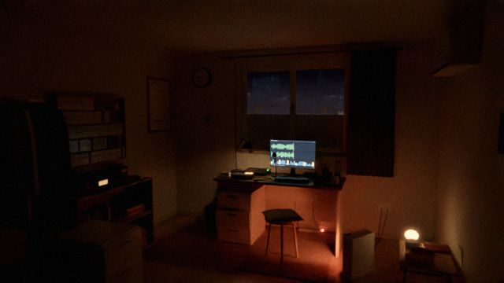
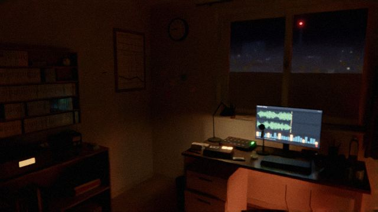
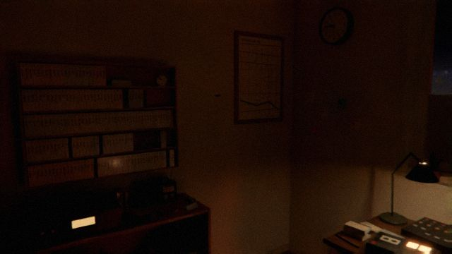
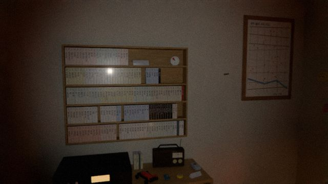
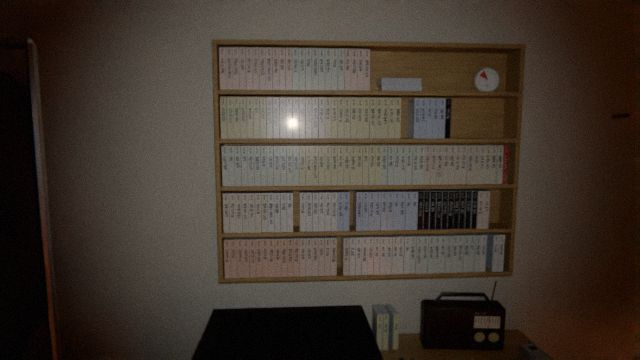
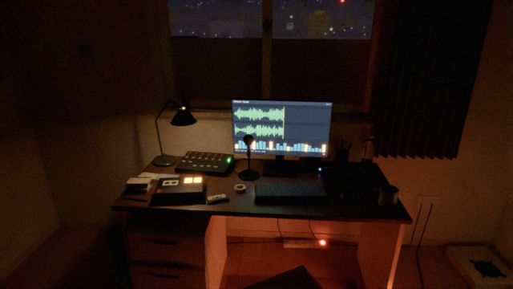
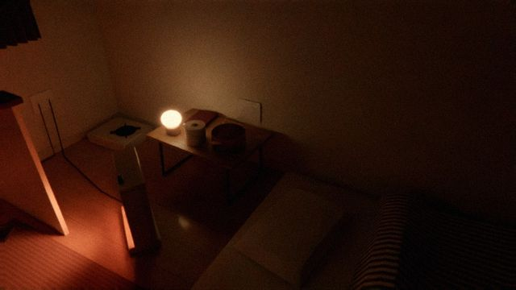
같은 방, 오후 16:40 12초
같은 모델에서 빛과 걷는 길만 바꿨습니다. 퇴근해 들어서면 서북서로 난 창으로 든 낮은 해가 침대 쪽 벽에 놓여 있습니다. 첫 판은 새벽 해가 테이프 벽에 드는 장면이었는데, 검토에서 그 시각 · 그 방향으로는 불가능하고 방의 규칙에도 어긋난다는 지적을 받아 건물의 방향과 시각을 다시 정했습니다
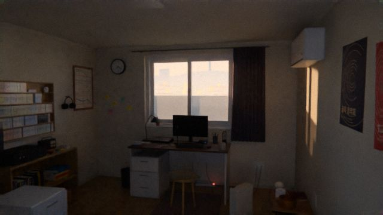
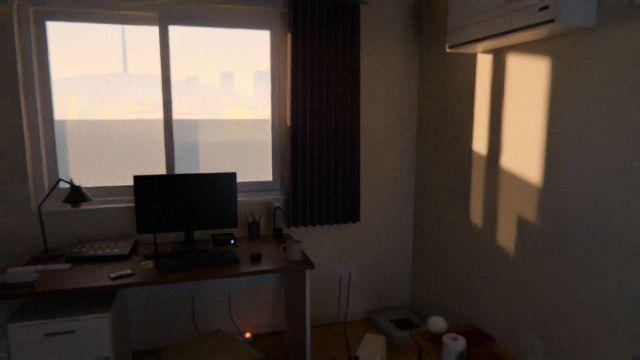
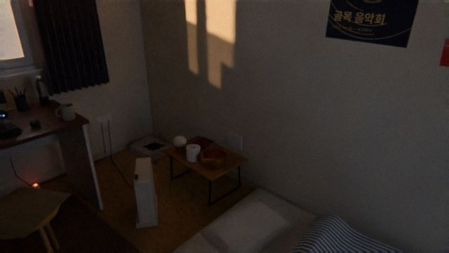
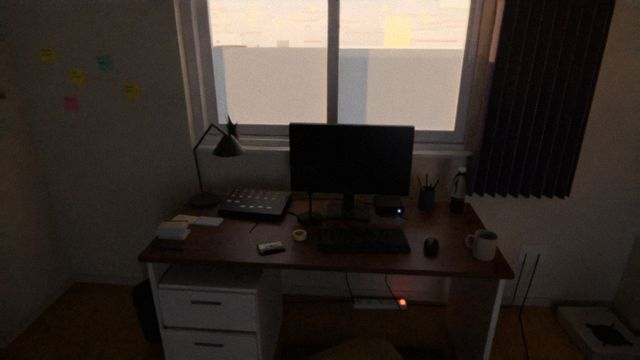
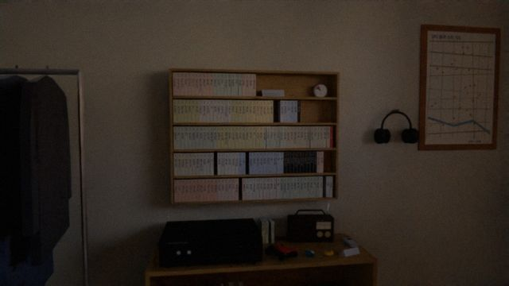
방법 작업등 · 받침 · 검토
어두운 장면을 보기 전에 방 전체를 자로 재고, 밝은 작업등 아래에서 다른 눈으로 봅니다
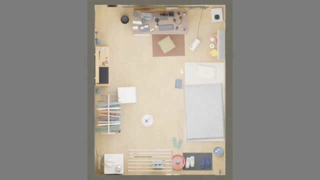
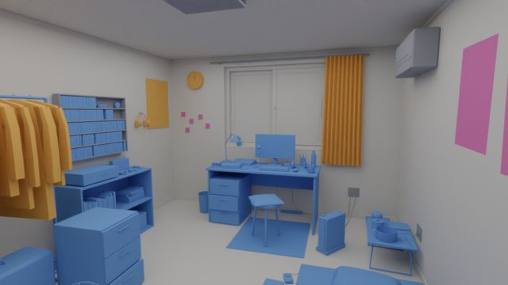
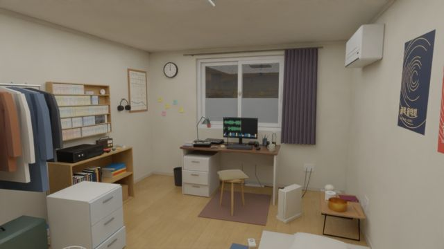
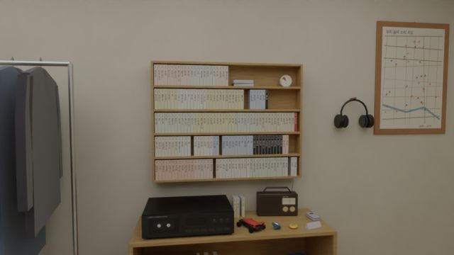
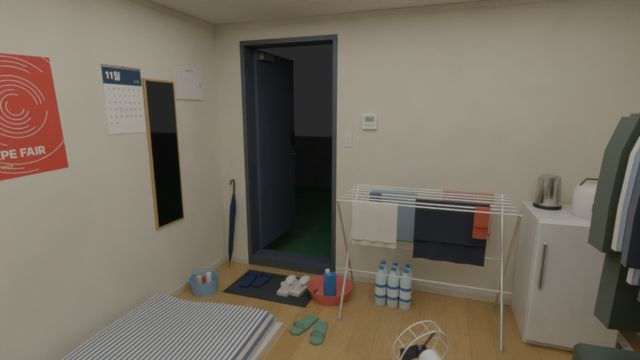
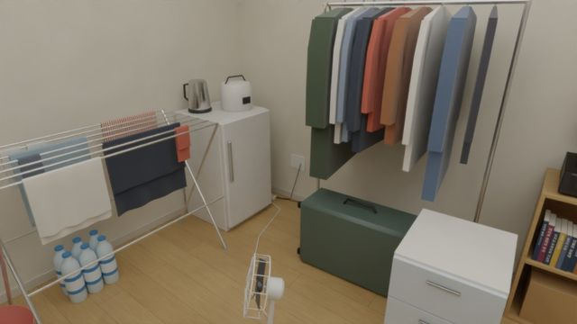
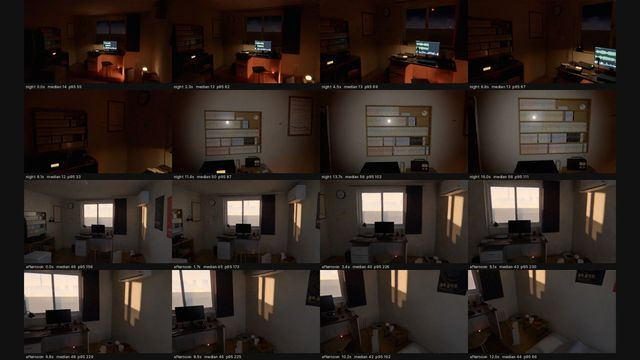
「창가 책상」 시작 프로젝트 밤 6초 + 새벽 5초
복사해서 바로 도는 가장 작은 방입니다. 새 주제는 여기서 시작해 건물 · 사람 · 물건 · 빛을 모두 바꿉니다
실제 작품
이 스킬을 만든 출처와, 이 레포에서 새 주제로 만든 예제입니다.
링크
- SKILL.md 워크플로
- 폴더 lib · scripts · templates · starter · examples
- README.md 빠른 시작
- references/SOURCE.md 원문 요약 정리(한국어)와 65가지 방법의 대응
- references/BRIEF.md 주제 → 브리프, 되묻는 질문, 스틸 검토 기준
- references/METHOD.md 뼈대 먼저 · 조사한 숫자 · 만드는 방법 · 받침 여섯 가지와 물리 검사 · 생활감
- references/FILM.md 창밖 그림 · 작은 움직임 · 빛 · 손에 든 카메라 · 두 시간대
- references/REVIEW.md 라운드 · 다른 에이전트의 검토 · 회고
- references/KIT.md lr 라이브러리: 방 · 받침 · 모델링 · 재질 · 그림 · 공통 소품
- references/LESSONS.md 겪은 문제와 해결
- examples/rooftop-tapes/BRIEF.md 예제의 브리프
- examples/rooftop-tapes/RESEARCH.md 예제의 숫자와 출처